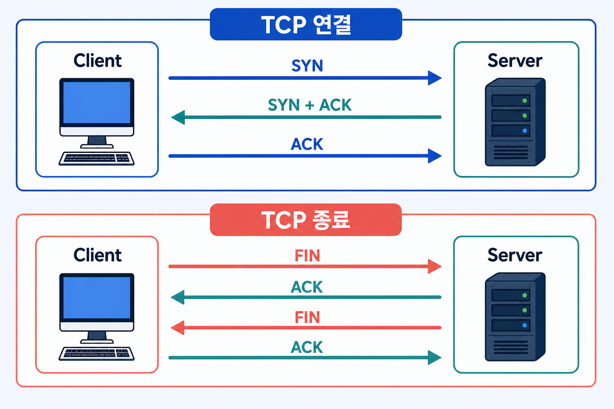
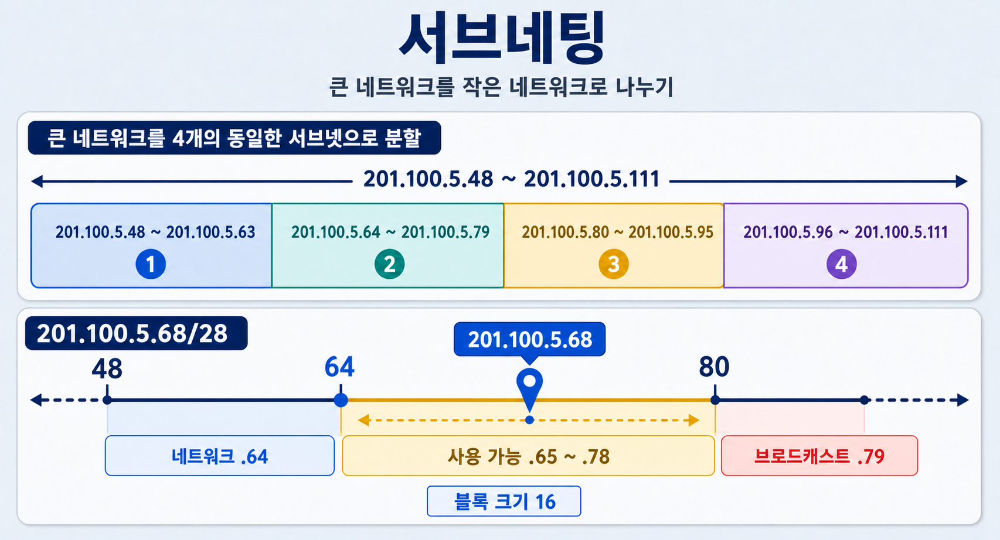
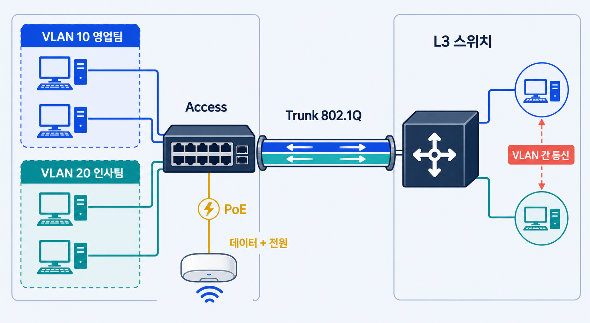

전공자가 아니어도 이해되는
합격 핵심 요약노트
용어를 그냥 외우게 하지 않고, "이게 왜 이런 거지?"부터 쉬운 말로 풀어서 설명한 뒤, 시험에서 정답을 고르는 기준까지 정리했습니다.
쉬운 설명 → 암기표 → 기출 함정
OSI 7계층과 TCP/IP[21]
계층 문제는 역할·장비·PDU·주소를 한 묶음으로 외우면 대부분 해결됩니다.
| 계층 | 핵심 기능 | PDU / 주소 | 프로토콜·장비 |
|---|---|---|---|
| 7 응용 | 사용자에게 네트워크 서비스 제공 | Data | HTTP, FTP, SMTP, DNS, SNMP |
| 6 표현 | 암호화·복호화, 압축, 코드 변환 | Data | JPEG, ASCII, TLS 표현 기능 |
| 5 세션 | 연결의 설정·유지·종료, 동기점 | Data | NetBIOS[1], RPC[2] |
| 4 전송 | 종단 간 신뢰성, 흐름·오류 제어 | Segment / Port | TCP, UDP, L4 스위치 |
| 3 네트워크 | 논리 주소와 최적 경로 선택 | Packet / IP | IP, ICMP, IGMP, Router, L3 스위치 |
| 2 데이터링크 | 프레임, MAC, 오류 검출, 매체 접근 | Frame / MAC | Ethernet, ARP, Switch, Bridge |
| 1 물리 | 전기·광 신호와 비트 전송 | Bit | Cable, Hub, Repeater |
PDU(Protocol Data Unit)는 "그 계층에서 데이터를 부르는 이름"입니다. 4계층에서 데이터 조각은 Segment, 3계층으로 내려가면 Packet, 2계층에서는 Frame, 1계층에서는 그냥 신호인 Bit라고 부릅니다. 데이터 자체는 그대로인데 계층마다 필요한 정보(헤더)가 하나씩 덧붙는다고 생각하면 됩니다.
TCP/IP 4계층
TCP/IP는 OSI 7계층을 실제 인터넷에서 쓰기 좋게 4단계로 단순화한 모델입니다. 시험에서는 "이 계층이 OSI의 몇 계층에 해당하는가"를 비교해서 묻는 경우가 많습니다.
TCP와 UDP

| TCP | UDP |
|---|---|
| 연결형, 신뢰성, 순서·재전송·흐름 제어, 헤더 20바이트 이상 | 비연결형, 빠름, 보장 없음, 헤더 8바이트 |
| HTTP(S), FTP, SSH, SMTP, POP3, IMAP | DHCP, TFTP, SNMP, 스트리밍 |
- 3-way handshake: TCP가 통신을 시작하기 전 나누는 세 번의 확인 대화입니다. "연결해도 될까?"(SYN) → "그래, 나도 준비됐어"(SYN+ACK) → "좋아, 시작하자"(ACK) 순서로 서로 준비가 됐는지 확인한 뒤에야 실제 데이터를 주고받습니다.
- 4-way 종료: 연결을 끊을 때도 양쪽이 각각 "나 이제 끝났어"(FIN)라고 알리고 "알겠어"(ACK)라고 확인하는 과정을 양방향으로 거칩니다: FIN → ACK → FIN → ACK.
- TCP 플래그: SYN 연결, ACK 확인, FIN 정상 종료, RST 강제 종료, PSH 즉시 전달, URG 긴급
- Sliding Window: 받는 쪽이 "나 지금 이만큼 처리할 수 있어"라고 알려준 크기(Window Size)에 맞춰 보내는 쪽이 전송량을 조절하는 흐름 제어 방식입니다. 받는 쪽 처리 속도보다 빠르게 보내 데이터가 넘치는 것을 막습니다.
IPv4와 서브네팅
서브네팅은 매 회차 득점원이 될 수 있습니다. 아래 세 공식과 블록 크기를 반드시 익히세요.
호스트 수 공식에서 −2를 하는 이유는, 한 서브넷 안의 첫 번째 주소는 "네트워크 자체를 가리키는 이름표"(네트워크 주소)로, 마지막 주소는 "그 안의 모두에게 보내는 방송 주소"(브로드캐스트 주소)로 이미 예약되어 있어서 실제 장비에는 배정할 수 없기 때문입니다.
주소 클래스와 특수 주소
| 구분 | 첫 옥텟 / 범위 | 기본 마스크 | 용도 |
|---|---|---|---|
| A | 1~126 | /8, 255.0.0.0 | 대규모 |
| B | 128~191 | /16 | 중규모 |
| C | 192~223 | /24 | 소규모 |
| D | 224~239 | - | 멀티캐스트 |
| E | 240~255 | - | 실험 |
사설 IP
- 10.0.0.0/8
- 172.16.0.0 ~ 172.31.255.255
- 192.168.0.0/16
특수 IP
- 127.0.0.0/8: Loopback
- 169.254.0.0/16: APIPA
- 0.0.0.0: 미지정/기본
- 255.255.255.255: 제한 브로드캐스트
무조건 외울 CIDR 표
| Prefix | 마스크 | 블록 | 사용 호스트 |
|---|---|---|---|
| /24 | 255.255.255.0 | 256 | 254 |
| /25 | 255.255.255.128 | 128 | 126 |
| /26 | 255.255.255.192 | 64 | 62 |
| /27 | 255.255.255.224 | 32 | 30 |
| /28 | 255.255.255.240 | 16 | 14 |
| /29 | 255.255.255.248 | 8 | 6 |
| /30 | 255.255.255.252 | 4 | 2 |
/28의 블록 크기는 16 → 구간은 0,16,32,48,64,80… → 68은 64~79 구간 → 네트워크 201.100.5.64, 브로드캐스트 .79, 사용 가능 .65~.78

IPv4 헤더와 IPv6[22]
- IPv4: 32비트, 헤더 가변 20~60바이트, Header Checksum 존재, 라우터도 단편화 가능
- TTL(Time To Live): 패킷이 라우터를 하나 지날 때마다 값이 1씩 줄어드는 "수명"입니다. 0이 되면 그 라우터가 패킷을 버리고 ICMP Time Exceeded 메시지를 보냅니다. 잘못된 경로 설정으로 패킷이 라우터 사이를 무한히 도는 것을 막아주는 안전장치입니다.
- MTU(Maximum Transmission Unit): 한 번에 보낼 수 있는 패킷의 최대 크기(이더넷은 보통 1500바이트)입니다. 보낼 데이터가 MTU보다 크면 여러 조각으로 쪼개서 보내야 하는데, 이 과정을 단편화(Fragmentation)라고 합니다.
- IPv6: 128비트, 16진수 8그룹, 기본 헤더 40바이트, 브로드캐스트 없음
- IPv6는 중간 라우터가 아니라 보내는 호스트만 단편화하며 Fragment 확장 헤더를 사용. Header Checksum 없음(상위 계층에서 오류를 검사하므로 생략)
- ::1 Loopback, FE80::/10 Link-local, FF00::/8 Multicast
- 전환 기술: Dual Stack(두 방식을 동시에 사용), Tunneling(IPv6 패킷을 IPv4 안에 감싸서 전달), Translation(NAT64처럼 두 방식을 서로 변환)
IPv6 이웃 탐색과 자동 주소 설정[23]
- NS / NA: Neighbor Solicitation은 “이 IPv6 주소의 주인이 누구냐”고 묻고, Neighbor Advertisement는 “내가 그 주인이다”라고 답합니다. IPv4의 ARP 역할과 도달 가능 여부 확인을 함께 담당합니다.
- RS / RA: 호스트가 Router Solicitation으로 라우터 정보를 요청하면, 라우터가 Router Advertisement로 Prefix·기본 경로 등의 정보를 알려줍니다.
- SLAAC: RA로 받은 Prefix와 자신의 Interface ID를 합쳐 DHCP 서버 없이 스스로 주소를 만드는 방식입니다. 만든 주소가 이미 사용 중인지 DAD(Duplicate Address Detection)로 확인합니다.
- Hop Limit: IPv4의 TTL과 같은 역할입니다. 라우터를 지날 때마다 1씩 줄며, 0이면 폐기됩니다. 이름은 달라도 “무한 순환 방지용 수명”이라는 원리는 같습니다.
프로토콜·포트·DNS
포트 번호 암기표
핵심 프로토콜[24]
| 프로토콜 | 정답 키워드 |
|---|---|
| ARP / RARP | ARP: IP → MAC, RARP: MAC → IP(현재는 DHCP 사용) |
| ICMP | IP 오류 보고·진단, ping(Echo), traceroute(Time Exceeded). 데이터 전송용 아님 |
| IGMP | IPv4 멀티캐스트 그룹 가입·탈퇴 관리 |
| DHCP | DORA: Discover → Offer → Request → Ack, IP·마스크·Gateway·DNS 자동 할당 |
| SNMP | Manager, Agent, MIB[3]. Get/Set은 161, 비동기 Trap은 162 |
| FTP | Active: 서버가 데이터 연결, Passive: 클라이언트가 서버의 임의 포트로 연결 |
| NAT / PAT | NAT는 사설↔공인 변환, PAT는 포트까지 이용해 하나의 공인 IP를 다수가 공유 |
DNS 레코드[25]
www.icqa.or.kr처럼 외우기 쉬운 이름을 쓰고, 컴퓨터는 210.103.175.224처럼 숫자 주소(IP)로 통신하기 때문에, 둘을 연결해주는 장부가 필요합니다. 이 장부의 각 줄(레코드)마다 어떤 정보를 담는지가 다릅니다.| 레코드 | 의미 | 레코드 | 의미 |
|---|---|---|---|
| A | 이름 → IPv4 | AAAA | 이름 → IPv6 |
| PTR | IP → 이름(역방향) | CNAME | 별칭 → 실제 이름 |
| MX | 메일 서버 | NS | 권한 있는 네임서버 |
| SOA | 영역 권한·일련번호·갱신 값 | SRV | 서비스 위치·포트 |
| TXT | 문자 정보, SPF 등 | TTL | 캐시에 유지할 시간 |
- Primary(주) / Secondary(보조) 네임서버: Primary는 레코드를 직접 수정할 수 있는 원본 서버이고, Secondary는 Primary의 내용을 그대로 복제해 보관하는 서버입니다. Primary가 다운돼도 Secondary가 대신 응답할 수 있어 안정성이 높아집니다.
- Zone Transfer(영역 전송): Primary 네임서버의 레코드 전체를 Secondary 네임서버로 복사해 동기화하는 과정입니다. 아무나 요청할 수 있게 열어두면 회사의 서버 구조가 통째로 노출될 수 있어, 허용된 서버(IP)에만 전송되도록 제한하는 것이 보안상 중요합니다.
HTTP 상태 코드
2xx 성공: 200 OK · 201 Created / 3xx 이동: 301 영구, 302 임시, 304 캐시 / 4xx 클라이언트: 400, 401 인증 필요, 403 금지, 404 없음 / 5xx 서버: 500 내부 오류, 503 이용 불가
라우팅·교환·네트워크 장비[26]
| 프로토콜 | 방식 / 알고리즘 | 핵심 특징 |
|---|---|---|
| RIP | 거리 벡터 / Bellman-Ford[4] | Hop Count, 최대 15홉, 30초 갱신, 소규모 |
| OSPF | 링크 상태 / Dijkstra[5] SPF | Cost, 빠른 수렴, Area, 대규모, IP Protocol 89 |
| BGP | 경로 벡터 | AS[6] 간 EGP[7], TCP 179, 인터넷 사업자 간 라우팅 |
- 정적 라우팅: 관리자가 직접, 트래픽 적음·장애 대응 수동
- 동적 라우팅: 변화 자동 반영, 프로토콜 트래픽·자원 필요
- Longest Prefix Match: 목적지와 가장 길게 일치하는 경로 선택
- Default Route: 0.0.0.0/0, 다른 경로가 없을 때 사용
장비와 충돌·브로드캐스트 도메인
| 장비 | 판단 기준 | 도메인 |
|---|---|---|
| Hub | 모든 포트로 반복 전송 | 충돌·브로드캐스트 모두 1개 |
| L2 Switch | MAC Table로 전달 | 포트마다 충돌 분리, 브로드캐스트는 동일 VLAN |
| Router/L3 | IP와 Routing Table | 브로드캐스트 도메인 분리 |
| Gateway | 서로 다른 프로토콜 변환 | 4~7계층까지 가능 |
| Repeater | 감쇠된 신호 재생 | 물리 계층 |
STP(Spanning Tree Protocol)
고가용성(HA)과 부하 분산
- Load Balancer: 사용자 요청을 여러 대의 서버로 나눠 보내 특정 서버에 부하가 몰리지 않게 하며, 한 서버가 죽으면 나머지로 요청을 우회시켜 서비스를 계속 유지합니다.
- HSRP / VRRP: 여러 대의 라우터를 하나의 가상 IP·가상 MAC으로 묶어, 평소 쓰던 라우터(Active)가 죽으면 대기 중인 라우터(Standby)가 즉시 그 역할을 넘겨받는 게이트웨이 이중화 기술입니다.
전송·오류 제어·토폴로지
전송 방식
단방향
한 방향만. 방송, 키보드→컴퓨터
반이중
양방향이지만 동시 불가. 무전기
전이중
양방향 동시. 전화
- 동기식: 문자 사이 휴지 없음, 블록 단위, 효율 높음 / 비동기식: Start·Stop bit, 문자 단위
- 회선 교환: 전용 경로, 일정 지연, 설정 시간 필요 / 패킷 교환: 회선 공유, 저장 후 전달, 지연 변동
- 다중화: FDM 주파수, TDM 시간, WDM 광 파장, CDM 코드로 채널 분리
- 감쇠: 거리가 멀수록 세기 감소 / 왜곡: 주파수별 전달 차이 / 잡음: 원치 않는 신호
오류 검출과 ARQ
| 방식 | 핵심 |
|---|---|
| Parity | 간단한 1비트 오류 검출, 정정 불가 |
| CRC | 다항식 나눗셈, 집단 오류 검출에 강함 |
| Hamming | 오류 위치를 찾아 1비트 정정 가능 |
| Stop-and-Wait ARQ | 한 프레임 전송 후 ACK 대기, 단순하지만 비효율 |
| Go-Back-N ARQ | 오류 프레임부터 이후 전부 재전송 |
| Selective Repeat ARQ | 오류 난 프레임만 재전송, 버퍼 필요 |
| Adaptive ARQ | 회선 상태에 따라 프레임 길이를 동적으로 변경 |
토폴로지
| 형태 | 장점 | 단점 |
|---|---|---|
| Star | 증설·장애 발견·중앙 관리 쉬움 | 중앙 장비 고장 시 전체 영향 |
| Bus | 저렴, 케이블 적음 | 충돌, 종단저항 필요, 주 케이블 고장 |
| Ring | 충돌 적고 순서 예측 | 노드/링 고장이 전체 영향, 증설 어려움 |
| Mesh | 신뢰성·우회 경로 우수 | 비용·배선 복잡, 완전 연결선 n(n-1)/2 |
| Tree | 계층적 확장·관리 | 상위 노드 의존 |
프로토콜의 3요소와 캡슐화
교환 방식과 다중화[27]
| 구분 | 동작 원리 | 쉽게 구별하기 |
|---|---|---|
| 회선 교환 | 통신 전에 전용 경로를 확보 | 통화 중 길을 독점하는 전화 |
| 데이터그램 | 패킷마다 독립적으로 경로 선택 | 각 소포가 다른 길로 갈 수 있음 |
| 가상회선 | 먼저 논리 경로를 정하고 같은 경로로 전송 | 선로는 공유하지만 지정 노선을 따름 |
| FDM / WDM | 주파수 / 빛의 파장을 나눠 동시 전송 | 한 도로에 여러 차선 |
| TDM | 시간 슬롯을 차례로 배정 | 차례마다 발언권을 줌; 보낼 것이 없어도 고정 슬롯이면 낭비 |
전송 손상
- 감쇠: 거리가 멀수록 신호 세기가 약해짐. Repeater·증폭기로 보완
- 지연 왜곡: 신호의 주파수 성분마다 도착 시간이 달라 원래 모양이 흐트러짐. 위상 왜곡이라고도 부릅니다.
- 잡음: 외부 전기 신호가 섞임. 꼬임선은 두 선을 꼬아 간섭을 줄이고, 광섬유는 전자기 간섭에 강합니다.
PPP와 HDLC[28]
- PPP: LCP로 링크를 설정·시험·종료하고, NCP로 IP 같은 네트워크 계층 프로토콜을 구성합니다. PAP 또는 CHAP 인증도 지원합니다.
- PAP: ID와 비밀번호를 그대로 보내는 단순 2단계 인증이라 도청에 약함
- CHAP: 서버가 보낸 Challenge에 비밀번호 Hash를 섞어 응답하는 3단계 인증. 비밀번호 자체를 선로에 보내지 않고 주기적으로 재인증할 수 있어 PAP보다 안전
Ethernet·무선·케이블·보안
IEEE 802 핵심
- CSMA/CD: 전송 전 감지 → 충돌 감지 → Jam 신호 → Binary Exponential Backoff[8]. 전이중 Switch 환경에서는 충돌 없음
- CSMA/CA: 무선은 충돌 감지가 어려워 IFS[9], Random Backoff, ACK, 선택적 RTS/CTS[10]로 회피
- MAC 주소: 48비트(6바이트), 앞 24비트 OUI[11] 제조사, 뒤 24비트 장치 식별
- VLAN: 하나의 물리적 스위치를 부서·용도별로 여러 개의 논리적 그룹(가상 스위치)으로 나누는 것입니다. 케이블을 새로 깔지 않아도 "이 포트는 인사팀, 저 포트는 개발팀"처럼 소프트웨어로 나눌 수 있고, 서로 다른 VLAN끼리는 원칙적으로 통신이 안 되어 브로드캐스트 트래픽과 보안 사고 범위가 줄어듭니다. VLAN 간 통신은 L3(라우터·L3 스위치)가 있어야 가능합니다.
- Trunk(트렁크) 포트: 스위치와 스위치를 연결할 때, 여러 VLAN의 트래픽을 케이블 한 가닥으로 함께 실어 보내는 포트입니다. 각 프레임에 "몇 번 VLAN 소속인지" 표시(태그)를 붙이는 규격이 802.1Q입니다. 반대로 한 VLAN만 오가는 일반 포트는 Access 포트라고 합니다.
Wi-Fi
| 규격 | 주파수 | 이론상 특징 |
|---|---|---|
| 802.11a | 5GHz | 54Mbps |
| 802.11b | 2.4GHz | 11Mbps |
| 802.11g | 2.4GHz | 54Mbps |
| 802.11n (Wi-Fi 4) | 2.4/5GHz | MIMO, 최대 600Mbps |
| 802.11ac (Wi-Fi 5) | 5GHz | MU-MIMO[12], 기가비트급 |
| 802.11ax (Wi-Fi 6) | 2.4/5GHz | OFDMA[13], 고밀도 효율 |
케이블
- UTP: 저렴·설치 쉬움·전자기 간섭 영향. RJ-45. 이더넷 최대 구간 보통 100m
- 동축: 중심 도체·절연체·차폐·외피. UTP보다 차폐 우수
- 광섬유: Core·Cladding, 고속·장거리·EMI 무관·도청 어려움. 비싸고 접속 어려움
- Single Mode: 코어 좁음·장거리·레이저 / Multi Mode: 코어 넓음·단거리·LED
- Straight: 과거 다른 장비(PC-Switch) / Crossover: 같은 장비. 현재 Auto MDI-X가 자동 처리
RAID[29]
| Level | 방식 | 핵심 |
|---|---|---|
| 0 | Striping | 빠름, 용량 100%, 장애 대비 없음 |
| 1 | Mirroring | 동일 복제, 안정성 높음, 용량 50% |
| 5 | 분산 Parity | 최소 3개, 1개 장애 허용 |
| 6 | 이중 Parity | 최소 4개, 2개 장애 허용 |
| 10 | 1+0 | Mirror 후 Stripe, 성능·안정성, 최소 4개 |
VLAN·Trunk·PoE와 고속 전달[30]
- Access 포트: 보통 PC 한 대가 연결되며 한 VLAN의 Untagged 프레임을 처리
- Trunk/Tagged 포트: 여러 VLAN의 프레임을 태그로 구별해 한 링크로 전달
- VTP: Cisco 스위치 사이에서 VLAN 정보를 전파·동기화
- PoE: Ethernet 케이블 하나로 데이터와 전원을 함께 공급. 천장 AP·IP 전화·CCTV처럼 콘센트가 먼 장비에 유용
- MPLS: 목적지 IP를 매번 길게 조회하는 대신 짧은 Label로 빠르게 전달하고, 경로·품질 정책을 적용하기 쉽게 만든 기술

DAS·NAS·SAN[31]
| 방식 | 연결 모습 | 비유 |
|---|---|---|
| DAS | 서버에 디스크를 직접 연결 | 내 책상 서랍 |
| NAS | 일반 IP 네트워크에서 파일 단위 공유(NFS·SMB) | 공용 파일 보관함 |
| SAN | 전용 고속망에서 서버에 블록 장치처럼 제공 | 멀리 있지만 내 디스크처럼 보이는 창고 |
정보보안의 3요소(CIA)[32]
기밀성 (Confidentiality)
허가되지 않은 사람은 내용을 못 보게 함. 암호화가 대표 수단
무결성 (Integrity)
전송·저장 중 데이터가 변조되지 않았음을 보장. 해시·CRC로 확인
가용성 (Availability)
필요할 때 서비스를 정상적으로 쓸 수 있음. DDoS는 이걸 깨뜨리는 공격
암호화와 인증서
- 대칭키(비밀키) 암호화: 암호화·복호화에 같은 키 사용. 속도가 빠르지만 키를 안전하게 나눠주는 것이 어려움 (예: AES)
- 공개키(비대칭키) 암호화: 공개키로 잠그고 개인키로만 열 수 있음. 키 배포는 안전하지만 속도가 느려, 실제로는 처음 연결할 때만 공개키로 대칭키를 안전하게 교환하고 이후 통신은 대칭키로 처리(HTTPS 방식)
- 인증서(PKI): 공인된 인증기관(CA)이 "이 공개키의 주인이 맞다"고 서명해준 전자 신분증. 웹사이트의 HTTPS 자물쇠 표시가 바로 이 인증서를 확인한 결과
방화벽·프록시·탐지 장비[33]
탐지·차단
Firewall 규칙 기반 필터링(패킷 필터링형 → 상태 기반형 → 애플리케이션 계층까지 보는 방화벽 순으로 발전)
IDS 침입 탐지·경고만 수행(수동적)
IPS 탐지 후 트래픽 차단까지 수행(능동적)
WAF 웹 애플리케이션 공격(SQL Injection[14] 등) 방어
NAC와 웹 공격 구분[34]
- NAC(Network Access Control): 사용자·장비가 회사 네트워크에 들어오기 전에 신원과 보안 상태를 검사하고, 기준을 통과한 장비만 접속시키는 출입 통제입니다. 감염되거나 보안 패치가 안 된 PC는 격리할 수 있습니다.
- XSS: 공격자가 게시글 등에 악성 Script를 심어, 그 글을 보는 다른 사용자의 Browser에서 실행되게 하는 공격입니다. 방어의 핵심은 출력 인코딩과 입력 검증입니다.
- SQL Injection: 입력 칸에 SQL 조각을 넣어 Database 질의를 바꾸는 공격입니다. XSS가 사용자 Browser를 노린다면 SQL Injection은 서버 뒤 Database를 노린다는 차이가 있습니다.
Windows Server
Active Directory[35]
- Domain: 공통 DB·정책·인증을 공유하는 관리 단위
- OU(조직 구성 단위): 한 도메인 안에서 부서별로 객체를 묶고 GPO·관리 권한을 위임하는 단위
- Tree: 연속된 DNS 이름의 도메인 집합(예: a.com과 그 하위 b.a.com) / Forest: 하나 이상의 Tree를 모은 것으로, AD 전체의 가장 바깥 경계
- Trust(신뢰 관계): 서로 다른 도메인끼리 "이 도메인의 사용자를 우리 도메인 자원에도 접근하게 해주겠다"고 맺는 관계
- Global Catalog: Forest 전체 객체의 일부 정보를 모아둔 통합 검색 색인으로, 로그온·검색 속도를 높여줌
- GPO(그룹 정책 개체): "바탕화면 배경을 통일한다", "USB를 못 쓰게 한다" 같은 설정을 Site/Domain/OU 단위로 한꺼번에 적용하는 정책 묶음
DNS·DHCP·IIS
| 역할 | 기출 포인트 |
|---|---|
| DNS | 정방향 이름→IP, 역방향 IP→이름. Primary 수정 가능, Secondary 읽기 전용 복제. Stub은 NS·SOA·Glue[17]만 보유 |
| DHCP | Scope는 할당 범위, Exclusion은 제외, Reservation은 MAC에 특정 IP 고정, Lease는 임대 시간. 서버 인증 필요 |
| IIS | Windows 웹·FTP 서버. 관리 실행 inetmgr, 기본 HTTP 80/HTTPS 443 |
| Hyper-V | Type 1 하이퍼바이저 기반 가상화, 가상 Switch 제공, Checkpoint 지원 |
| BitLocker | 볼륨 전체 암호화, TPM[18]과 함께 사용 가능 |
Windows 명령어
ipconfig /allIP·MAC·DHCP·DNS 등 상세 설정ipconfig /releaseDHCP 주소 반납ipconfig /renewDHCP 주소 갱신ipconfig /flushdnsDNS 캐시 삭제ping -t 주소중단할 때까지 지속 Pingtracert목적지까지 경유 Router 추적pathping경로 추적 + 구간별 손실 통계nslookupDNS 질의netstat -ano연결·포트·PID 표시route printRouting Table 출력arp -aARP Cache 표시hostname컴퓨터 이름 표시관리 도구와 로그
- Event Viewer: Application, Security, Setup, System, Forwarded Events
- Performance Monitor: Counter와 Data Collector Set으로 성능 수집
- Resource Monitor: CPU·Memory·Disk·Network 실시간 사용량
- Shutdown Event Tracker: 종료·재부팅 이유 기록
- SMB: Windows 파일·프린터 공유, TCP 445
PowerShell·파일시스템·서버 기능[36]
- NTFS: 권한(ACL), 압축, EFS 암호화, 디스크 할당량을 지원하는 일반 Windows 파일시스템
- ReFS: 대용량·무결성·손상 복구에 초점을 둔 서버용 파일시스템. NTFS의 모든 기능과 완전 호환되는 것은 아닙니다.
- FAT32: 호환성은 좋지만 단일 파일 크기 4GB 제한, 세밀한 권한·EFS 기능이 없음
- DNS Round Robin: 같은 이름에 여러 IP를 등록하고 응답 순서를 돌려 간단히 부하를 분산. 서버 상태를 정교하게 판단하는 전용 Load Balancer와는 다릅니다.
- WAP(Web Application Proxy): 외부 사용자가 내부 웹 애플리케이션에 접근하도록 대신 게시하는 역방향 프록시. 원격 PC 전체를 사내망에 붙이는 VPN과 구분합니다.
백업 전략
| 방식 | 백업 대상 | 복구 방법 |
|---|---|---|
| 전체(Full) | 매번 전체 데이터 | 가장 최근 전체 백업 1개만 복원 |
| 증분(Incremental) | 직전 백업(전체든 증분이든) 이후 바뀐 것만 | 전체 백업 + 그 뒤 모든 증분 백업을 순서대로 복원 |
| 차등(Differential) | 가장 최근 전체 백업 이후 바뀐 것 전부 | 전체 백업 + 가장 최근 차등 백업 1개만 복원 |
Linux 핵심 명령어와 설정 파일
Linux는 명령어의 목적과 옵션을 묻는 문제가 반복됩니다. 직접 입력하는 모양으로 외우세요.
파일·디렉터리·검색
pwd현재 경로ls -al숨김 포함 상세 목록cp -r디렉터리 재귀 복사rm -rf재귀 강제 삭제mkdir -p상위 경로까지 생성find / -name '*.conf'이름으로 검색grep -i 'text' file대소문자 무시 문자열 검색more / less페이지 단위 보기head / tail -f앞/뒤, 로그 실시간 확인ln / ln -sHard / Symbolic Link권한·소유권·특수 권한
chmod 755는 "주인은 rwx(7), 그룹과 기타는 r-x(5)"라는 뜻입니다.chmod 755 file: rwx r-x r-x /chmod 644: rw- r-- r--chmod a-w file: 모든 사용자의 쓰기 권한 제거 /chmod o+r file: 기타에 읽기 추가chown user:group file: 소유자·그룹 변경 /chgrp group file: 그룹 변경- SetUID 4000: 실행 시 소유자 권한 / SetGID 2000: 그룹 권한 / Sticky 1000: 디렉터리에서 자기 파일만 삭제
lsattr속성 확인,chattr +i변경·삭제 불가(immutable)- 일반 파일
-, 디렉터리d, Symbolic Linkl
프로세스·서비스·시스템
ps -ef전체 프로세스 스냅샷top프로세스·자원 실시간kill -9 PID프로세스 강제 종료jobs / bg / fgShell 작업 관리nohup 명령 &로그아웃 후에도 백그라운드 실행systemctl status 서비스systemd 서비스 상태free -mMemory·Swap 사용량df -h / du -shFile System / Directory 용량mountFile System 연결·확인uname -aKernel·시스템 정보네트워크·계정
ip addrInterface IPip routeRouting Tabless -lntupListening Port·Processnetstat -an모든 연결·Listening Portdig / nslookupDNS 질의useradd / userdel사용자 생성·삭제passwd비밀번호 변경chage -W 10 user만료 10일 전 경고who / w로그인 사용자last / lastb성공 / 실패 로그인 이력중요 디렉터리·파일
| 경로 | 내용 | 경로 | 내용 |
|---|---|---|---|
| /etc | 시스템 설정 | /var | Log·Spool 등 가변 자료 |
| /home | 일반 사용자 Home | /root | root Home |
| /proc | Process·Kernel 가상 FS | /dev | 장치 파일 |
| /etc/passwd | 계정 기본 정보 | /etc/shadow | 암호 Hash·정책 |
| /etc/group | 그룹 정보 | /etc/resolv.conf | DNS Server |
| /etc/hosts | 정적 이름-IP | /etc/fstab | 부팅 시 Mount |
Cron·VI·압축
0 10 * * 1 /etc/check.sh = 매주 월요일 10:00crontab -l목록,-e편집,-r전체 삭제- VI:
i입력,Esc명령,:w저장,:q종료,:wq저장 종료,:q!강제 종료 - 치환:
:%s/old/new/g전체 문서의 old를 new로 모두 변경 tar cvf a.tar dir묶기,tar xvf풀기, gzip 포함은czvf / xzvf
Apache·BIND[38]
| 항목 | 정답 키워드 |
|---|---|
| Apache 설정 | httpd.conf, 포트는 Listen, 요청 대기시간은 Timeout, 기본 문서는 DirectoryIndex |
| BIND 설정 | /etc/named.conf, Zone 파일은 보통 /var/named, Package·Service 이름 named |
| SOA | Serial 변경 번호, Refresh 갱신 주기, Retry 재시도, Expire 만료, Minimum/Negative TTL |
| Shell | 사용자 명령을 해석해 Kernel에 전달. bash, sh, csh, ksh |
| Swap | Memory 부족 시 Disk를 가상 Memory로 사용. RAM보다 느림 |
| Boot Loader | GRUB[19], 여러 OS Multi Boot 지원 |
디스크·파일시스템과 Shell 실전[37]
fdisk는 칸막이를 나누고, mkfs는 각 칸에 책을 꽂을 규칙을 만들며, mount는 그 책장을 내가 쓰는 방의 특정 위치에 연결합니다. fsck는 책의 색인과 실제 위치가 맞는지 검사하고 고치는 작업입니다.fdisk -l디스크·파티션 확인/편집mkfs파티션에 파일시스템 생성fsck파일시스템 오류 검사·복구LVM여러 디스크 공간을 묶어 논리 볼륨을 유연하게 확장nice / renice프로세스 우선순위 조정; nice 값이 클수록 우선순위는 낮음history이전에 실행한 명령 확인명령 > file출력을 새 파일로 저장(덮어쓰기)명령 >> file기존 파일 끝에 출력 추가- Runlevel: 0 종료, 1 단일 사용자, 3 다중 사용자 텍스트, 5 다중 사용자 GUI, 6 재부팅. 따라서
init 6은 종료가 아니라 재부팅입니다. - find -exec: 찾은 각 파일에 삭제·권한 변경 같은 후속 명령을 실행합니다.
- Apache KeepAliveTimeout: 지속 연결에서 다음 요청을 기다리는 시간. LimitRequestBody: 클라이언트 요청 본문의 최대 크기 제한
- /var/log/dmesg: 부팅 때 커널이 인식한 CPU·Memory·Disk·장치 메시지를 확인하는 로그
클라우드·가상화·최신 네트워크 기술
최근 회차일수록 서버를 직접 사서 설치하는 대신 "빌려 쓰는" 개념의 문제 비중이 늘고 있습니다.
클라우드 서비스 모델[39]
| 모델 | 내가 직접 관리하는 범위 | 예시 |
|---|---|---|
| IaaS Infrastructure | OS, 런타임, 애플리케이션까지 전부 직접 설치·관리 | 가상 서버(VM), 스토리지 임대 |
| PaaS Platform | 내가 만든 애플리케이션 코드만 관리 | 앱 실행 플랫폼, DB 서비스 |
| SaaS Software | 관리할 것 없이 사용만 함 | 웹메일, 웹 기반 오피스 |
서버 가상화
- Type 1 하이퍼바이저(베어메탈): OS 없이 하드웨어에 직접 설치되어 가상 머신을 관리. 성능이 좋아 서버용으로 주로 사용(예: Hyper-V, ESXi)
- Type 2 하이퍼바이저(호스트형): 이미 설치된 OS 위에 프로그램처럼 설치해서 사용. 개인 PC에서 테스트용으로 주로 사용
- 컨테이너(예: Docker): 가상 머신보다 더 가볍게, OS 커널을 공유하면서 애플리케이션 실행 환경만 격리하는 방식. 생성·시작 속도가 훨씬 빠름
- Snapshot(스냅샷): 특정 시점의 가상 머신 상태를 통째로 저장해두는 기능. 문제가 생기면 그 시점으로 즉시 되돌릴 수 있음
SDN·NFV·IoT[40]
- SDN(Software Defined Networking): 트래픽을 어디로 보낼지 결정하는 제어 기능(Control Plane)을 장비에서 분리해 중앙 컨트롤러가 관리. 네트워크 구성을 소프트웨어로 유연하게 바꿀 수 있음
- NFV(Network Functions Virtualization): 방화벽·로드밸런서 등 네트워크 장비의 기능을 전용 하드웨어 대신 범용 서버의 가상 머신·소프트웨어로 구현
- IoT(Internet of Things): 센서·가전제품처럼 다양한 사물이 인터넷에 연결되어 데이터를 주고받는 환경. 저전력·근거리 무선 기술(Zigbee, BLE[20] 등)과 함께 자주 출제됨
시험장 들어가기 전 마지막 암기장
암호·압축=6
신뢰·흐름=4
Routing=3
MAC·Frame=2
MAC 48bit
IPv4 32bit
IPv6 128bit
Port 16bit
/25 126
/26 62
/27 30
/28 14
/29 6
/30 2
RIP=15 Hop
OSPF=SPF
BGP=AS 간
Default=0/0
SMTP 25
POP3 110
IMAP 143
HTTPS 443
DNS 53
DHCP 67/68
SNMP 161/162
SSH 22
0=Striping
1=Mirroring
5=분산 Parity
6=이중 Parity
권한 4·2·1
설정=/etc
Log=/var
Process=/proc
기밀성=암호화
무결성=해시
가용성=DDoS 방어
IDS 탐지·IPS 차단
IaaS=인프라만
PaaS=실행환경까지
SaaS=완제품
Type1=베어메탈
각주
본문의 [숫자]를 누르면 여기로 이동합니다. 설명을 다 읽었으면 ↩를 눌러 읽던 자리로 돌아가세요.
- NetBIOS: Network Basic Input/Output System. 오래된 Windows 네트워크에서 컴퓨터 이름으로 서로를 찾고 파일을 공유하게 해주던 기술로, 지금은 대부분 DNS·TCP/IP로 대체되었습니다. ↩
- RPC: Remote Procedure Call. 내 컴퓨터에서 함수를 부르듯이, 실제로는 네트워크 건너편 다른 컴퓨터의 프로그램을 실행시키고 결과를 받아오는 통신 방식입니다. ↩
- MIB: Management Information Base. SNMP로 관리되는 장비(라우터·스위치 등)의 상태 정보(CPU 사용률, 포트 상태 등)를 정리해둔 "관리 항목 목록"입니다. ↩
- Bellman-Ford: 거리 벡터 라우팅에서 최단 경로를 계산할 때 쓰는 알고리즘 이름입니다. RIP가 이 방식을 사용합니다. ↩
- Dijkstra: 링크 상태 라우팅에서 최단 경로를 계산하는 알고리즘 이름(SPF, Shortest Path First)입니다. OSPF가 이 방식을 사용합니다. ↩
- AS(Autonomous System): 하나의 조직(통신사, 대학 등)이 독자적으로 관리하는 라우터들의 집합입니다. 인터넷은 이런 AS들이 서로 연결된 거대한 망입니다. ↩
- EGP(Exterior Gateway Protocol): 서로 다른 AS끼리 경로 정보를 주고받을 때 쓰는 라우팅 방식입니다. 같은 AS 안에서만 쓰는 IGP(RIP, OSPF 등)와 대비되며, BGP가 대표적인 EGP입니다. ↩
- Binary Exponential Backoff: 충돌이 발생했을 때 곧바로 다시 보내지 않고, 충돌이 반복될수록 대기 시간을 2배씩 늘려가며 무작위로 기다리는 재전송 방식입니다. 계속 충돌이 나는 상황을 막아줍니다. ↩
- IFS(Inter-Frame Space): 무선랜에서 프레임과 프레임 사이에 반드시 두는 짧은 대기 시간입니다. 다른 장치가 끼어들 틈을 주어 충돌 가능성을 줄입니다. ↩
- RTS/CTS(Request to Send / Clear to Send): 데이터를 보내기 전 "나 지금 보내도 될까?"(RTS)라고 묻고 "그래, 보내"(CTS) 허락을 받는 절차입니다. 서로 안 보이는 무선 장치끼리 동시에 전송해 충돌하는 것을 예방합니다. ↩
- OUI(Organizationally Unique Identifier): MAC 주소의 앞 24비트로, IEEE가 제조사별로 발급하는 고유 번호입니다. MAC 주소만 봐도 어느 회사 제품인지 알 수 있습니다. ↩
- MU-MIMO(Multi-User MIMO): 여러 안테나를 이용해 여러 대의 기기에 동시에 데이터를 보내는 기술입니다. 사람이 많은 곳에서도 속도 저하를 줄여줍니다. ↩
- OFDMA(Orthogonal Frequency Division Multiple Access): 하나의 넓은 채널을 잘게 쪼개 여러 기기에 동시에 나눠주는 전송 방식입니다. 기기가 많이 몰려도 효율적으로 처리합니다. ↩
- SQL Injection: 웹사이트 입력창에 정상적인 값 대신 데이터베이스 명령어를 끼워 넣어, 허가 없이 데이터를 열람·조작하는 공격 기법입니다. ↩
- AH(Authentication Header): IPSec에서 데이터가 중간에 위조되지 않았는지 인증·무결성만 검사하는 부분입니다. 데이터 자체를 암호화하지는 않습니다. ↩
- ESP(Encapsulating Security Payload): IPSec에서 데이터를 실제로 암호화해 내용을 감추는 부분입니다. 인증 기능도 함께 제공할 수 있습니다. ↩
- Glue 레코드: 네임서버 이름이 그 도메인 자체에 속해 있을 때(예: ns.icqa.or.kr이 icqa.or.kr의 네임서버), 이름만으로는 순환 조회가 생기므로 미리 IP를 함께 알려주는 보조 레코드입니다. ↩
- TPM(Trusted Platform Module): 암호화 키를 안전하게 저장·관리하는 보안 전용 칩입니다. 컴퓨터 메인보드에 내장되어 BitLocker 같은 디스크 암호화 기능과 함께 쓰입니다. ↩
- GRUB(GRand Unified Bootloader): 컴퓨터를 켰을 때 가장 먼저 실행되어 어떤 운영체제를 부팅할지 선택·시작해주는 리눅스의 대표적인 부트로더 프로그램입니다. ↩
- BLE(Bluetooth Low Energy): 배터리를 적게 소모하도록 만들어진 저전력 블루투스 규격입니다. 스마트워치, 센서처럼 오래 켜둬야 하는 IoT 기기에 많이 쓰입니다. ↩
- OSI / TCP/IP / PDU: OSI는 Open Systems Interconnection, 즉 서로 다른 회사의 장비도 통신하게 만든 계층별 표준 모형입니다. TCP/IP는 실제 인터넷 통신의 중심이 되는 프로토콜 묶음입니다. PDU(Protocol Data Unit)는 “각 계층이 다루는 데이터 덩어리의 이름”으로, Segment → Packet → Frame → Bit처럼 계층에 따라 이름이 달라집니다. ↩
- IP / TTL / MTU / CIDR: IP는 Internet Protocol로 목적지 주소를 붙여 패킷을 전달하는 규칙입니다. TTL(Time To Live)은 패킷의 남은 수명, MTU(Maximum Transmission Unit)는 한 번에 실을 수 있는 최대 크기입니다. CIDR(Classless Inter-Domain Routing)은 주소를 A·B·C Class에 고정하지 않고
/24처럼 Prefix 길이로 필요한 만큼 나누는 방식입니다. ↩ - NDP / NS·NA / RS·RA / SLAAC / DAD: 모두 IPv6의 이웃 확인·주소 설정 용어입니다. NDP(Neighbor Discovery Protocol)가 전체 체계이고, NS/NA는 이웃에게 질문/응답, RS/RA는 Router에게 질문/응답하는 메시지입니다. SLAAC(Stateless Address Autoconfiguration)은 서버 없이 스스로 주소를 만드는 기능, DAD(Duplicate Address Detection)는 그 주소가 중복인지 검사하는 기능입니다. ↩
- ARP / RARP / ICMP / IGMP / DHCP / SNMP / NAT·PAT: ARP는 IP→MAC, RARP는 MAC→IP 변환입니다. ICMP는 오류·진단, IGMP는 Multicast 가입 관리, DHCP는 IP 자동 임대, SNMP는 장비 상태 관리에 씁니다. NAT는 사설·공인 IP를 바꾸고, PAT는 Port 번호까지 이용해 공인 IP 하나를 여러 장비가 나눠 쓰게 합니다. ↩
- DNS와 Record: DNS(Domain Name System)는 도메인 이름을 IP로 찾는 분산 전화번호부입니다. A/AAAA는 이름→IPv4/IPv6, PTR은 IP→이름, CNAME은 별명, MX는 Mail Server, NS는 Name Server, SOA는 Zone의 원본·갱신 정보, TXT는 문자 정책 정보를 담습니다. Record는 이 전화번호부의 한 줄짜리 항목이라는 뜻입니다. ↩
- RIP / OSPF / BGP / STP / HA: RIP(Routing Information Protocol)는 거친 Router 수로 길을 고릅니다. OSPF(Open Shortest Path First)는 회선 Cost로 내부 최단 길을 계산하고, BGP(Border Gateway Protocol)는 통신사 같은 큰 조직 사이의 길을 정합니다. STP는 Switch Loop 방지, HA(High Availability)는 장애에도 서비스를 계속하기 위한 이중화입니다. ↩
- FDM / TDM / WDM: 한 전송로를 여러 통신이 나눠 쓰는 다중화 방식입니다. FDM(Frequency Division Multiplexing)은 주파수 대역을, TDM(Time Division Multiplexing)은 사용 시간을, WDM(Wavelength Division Multiplexing)은 광섬유 안의 빛 파장을 나눕니다. 각각 라디오 채널, 돌아가며 쓰는 회의 마이크, 여러 색의 빛에 비유할 수 있습니다. ↩
- PPP / HDLC / LCP·NCP / PAP·CHAP: PPP(Point-to-Point Protocol)와 HDLC(High-level Data Link Control)는 두 지점 연결에서 Frame을 주고받는 규칙입니다. PPP의 LCP는 물리 Link 설정, NCP는 IP 같은 Network Protocol 설정을 맡습니다. PAP는 비밀번호를 단순 전송하고, CHAP는 Challenge와 Hash 응답을 써 더 안전합니다. ↩
- RAID: Redundant Array of Independent Disks, 여러 Disk를 하나처럼 묶는 기술입니다. Striping은 데이터를 나눠 써서 빠르게 하고, Mirroring은 똑같이 복제하며, Parity는 장애 때 데이터를 계산해 복구할 정보를 함께 저장합니다. RAID는 Backup 그 자체가 아니므로 별도 백업도 필요합니다. ↩
- VLAN / VTP / PoE / MPLS: VLAN(Virtual LAN)은 물리 Switch를 논리 그룹으로 나눕니다. VTP(VLAN Trunking Protocol)는 Cisco Switch끼리 VLAN 정보를 공유하고, PoE(Power over Ethernet)는 LAN Cable로 전원까지 공급합니다. MPLS(Multiprotocol Label Switching)는 IP 대신 짧은 Label을 보고 빠르게 전달하는 통신망 기술입니다. ↩
- DAS / NAS / SAN: DAS(Direct Attached Storage)는 Server에 직접 붙인 저장장치입니다. NAS(Network Attached Storage)는 일반 Network에서 File 단위로 공유하고, SAN(Storage Area Network)은 전용 고속망에서 저장공간을 Disk Block 단위로 제공합니다. NAS는 공용 폴더, SAN은 원격지에 있는 내 Disk에 가깝습니다. ↩
- CIA / Hash / PKI / CA: CIA는 보안의 세 목표인 Confidentiality(기밀성), Integrity(무결성), Availability(가용성)의 머리글자입니다. Hash는 입력의 지문 같은 고정 길이 값을 만들어 변조를 확인합니다. PKI(Public Key Infrastructure)는 공개키 인증 체계, CA(Certificate Authority)는 인증서를 발급해 공개키의 주인을 보증하는 기관입니다. ↩
- IDS / IPS / WAF / VPN / SSH / WPA: IDS는 Intrusion Detection System이라 침입을 발견해 알리고, IPS는 Intrusion Prevention System이라 발견 후 차단합니다. WAF는 Web Application 전용 Firewall입니다. VPN은 공중망 속 암호화 Tunnel, SSH는 안전한 원격 Shell, WPA는 Wi-Fi 접속을 보호하는 보안 규격입니다. ↩
- NAC / XSS / SQL Injection: NAC(Network Access Control)는 Network에 들어올 사람과 장비를 검사하는 출입 관리입니다. XSS(Cross-Site Scripting)는 다른 사용자의 Browser에서 악성 Script를 실행시키는 공격이고, SQL Injection은 Database 명령을 입력값에 끼워 넣는 공격입니다. XSS의 X는 CSS와 이름이 겹치는 것을 피하려고 Cross를 X로 쓴 것입니다. ↩
- AD / OU / GPO / Domain·Tree·Forest: AD(Active Directory)는 Windows 회사망의 계정·Computer·정책 장부입니다. OU(Organizational Unit)는 그 안의 부서별 묶음, GPO(Group Policy Object)는 일괄 적용할 설정 묶음입니다. Domain은 기본 관리 구역, Tree는 이어진 이름의 Domain 묶음, Forest는 하나 이상의 Tree를 포함하는 AD의 가장 큰 경계입니다. ↩
- NTFS / ReFS / EFS / WAP: NTFS는 권한·압축·암호화·Quota를 지원하는 Windows 기본 File System입니다. ReFS(Resilient File System)는 대용량과 손상 복구를 강화했고, EFS(Encrypting File System)는 NTFS의 파일·폴더 암호화 기능입니다. WAP(Web Application Proxy)는 외부 요청을 받아 내부 Web Server에 대신 전달하는 역방향 Proxy입니다. ↩
- LVM / Shell / Redirect: LVM(Logical Volume Manager)은 여러 물리 Disk 공간을 논리적으로 묶어 크기를 유연하게 조절합니다. Shell은 사용자의 명령을 해석해 OS Kernel에 전달하는 창구입니다. Redirect는 명령의 입력·출력 방향을 바꾸는 기능으로,
>는 덮어쓰기,>>는 이어쓰기,|는 앞 명령의 출력을 다음 명령의 입력으로 전달합니다. ↩ - Apache / BIND / SOA: Apache는 대표적인 Web Server Software입니다. BIND(Berkeley Internet Name Domain)는 Linux·Unix에서 널리 쓰는 DNS Server Software입니다. SOA(Start of Authority)는 DNS Zone의 원본 Server와 Serial·Refresh·Retry·Expire 같은 동기화 기준을 기록합니다. Zone은 한 관리자가 책임지는 Domain Record 범위입니다. ↩
- IaaS / PaaS / SaaS: 공통의 aaS는 as a Service, 즉 “제품을 사는 대신 서비스로 빌려 쓴다”는 뜻입니다. IaaS는 Infrastructure(서버·Network), PaaS는 Platform(OS·실행 환경), SaaS는 Software(완성된 프로그램)까지 제공자가 맡습니다. 뒤로 갈수록 사용자는 편하지만 직접 설정할 범위는 줄어듭니다. ↩
- SDN / NFV / IoT: SDN(Software Defined Networking)은 Network 장비의 판단 기능을 Software Controller로 분리해 중앙 관리합니다. NFV(Network Functions Virtualization)는 Firewall·Load Balancer 같은 장비 기능을 범용 Server의 Software로 구현합니다. IoT(Internet of Things)는 Sensor·가전 등 사물이 Internet에 연결되는 환경입니다. SDN은 “제어 방식”, NFV는 “장비 기능의 가상화”에 초점이 있습니다. ↩